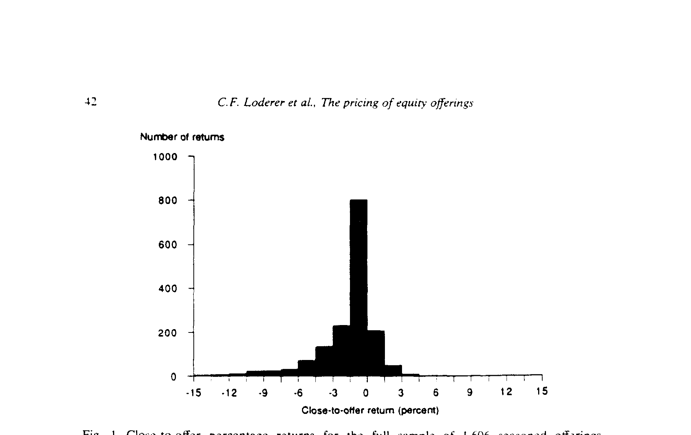
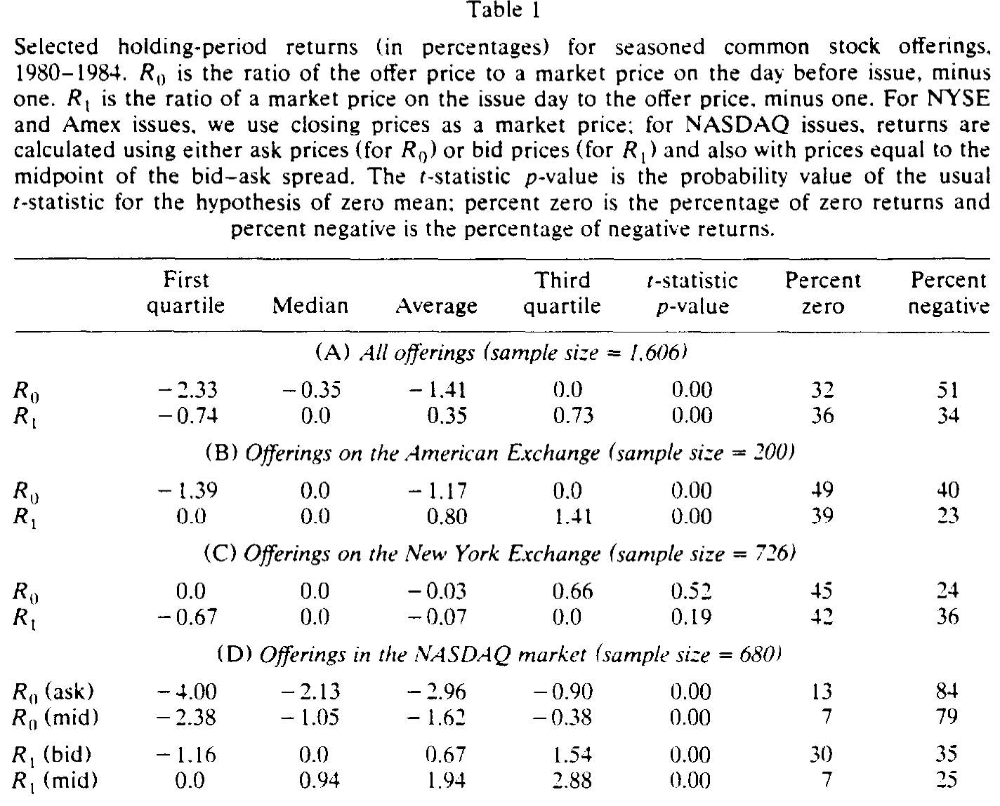
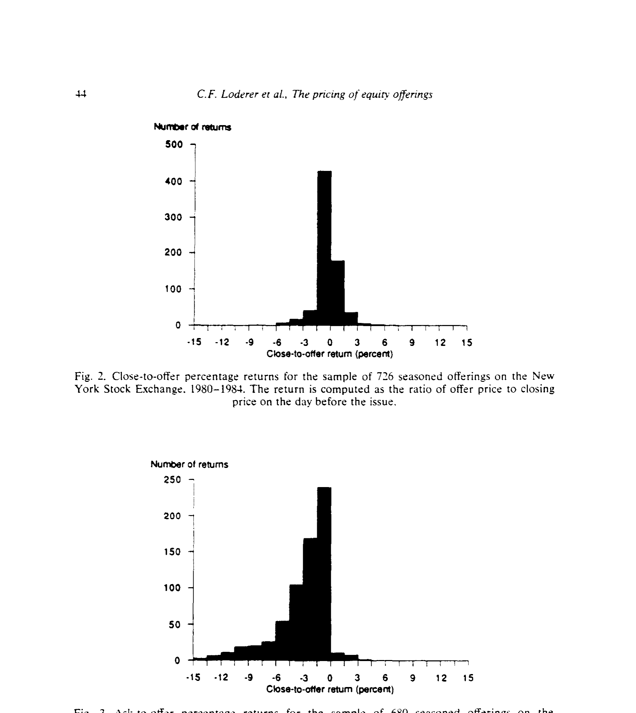
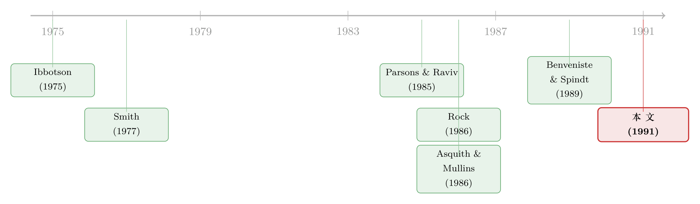

增发当天没「打折」，可放够一个月却赚了——一桩被忽略的定价之谜
本文读的是 Loderer, Sheehan & Kadlec (1991, JFE)：用 1,608 笔老股增发（seasoned equity offerings）和 341 笔新发优先股做体检，作者发现交易所上市的增发几乎没有系统性折价，新发优先股也没有——这和我们关于 IPO 折价的所有模型都对不上；可吊诡的是，按发行价认购、再持有 30 天，却能赚到一笔实实在在的超额收益，尤其在 NASDAQ。
1 一个所有人都默认、却没人验过的前提
关于新股，金融学里有一句几乎成为常识的话：新股是「打折」卖的。
这个共识有多硬？Smith (1986) 综述了一大批文献，发现 IPO 投资者拿到的平均超额收益介于 11% 到 52% 之间；Ibbotson, Sindelar and Ritter (1988) 在 1980–1984 年的 2,259 家公司里，量出从发行价到上市首日收盘的平均折价是 21%。注意，这还不是年化收益——它是几天之内的事。难怪几十年来，财务经济学家费尽心思去「合理化」这个看上去不太理性的现象。
关于「IPO 到底是不是真的打折」这件事本身就有争论，可参见《新股到底是「打折」卖，还是「溢价」卖？》。本文的切入口不一样：它问的不是 IPO，而是老股增发。
可问题来了。所有这些解释——投行的买方垄断、对法律责任的保险、信息不对称……——都是为 IPO 量身定做的。那么，已经上市、已经被市场「认识」了很久的老公司，再去增发股票时，会不会也被打折？
这正是本文要补的那块空白。在 IPO 研究热火朝天的那些年里，老股增发的定价被冷落了，新发优先股的定价更是几乎没人碰过。作者盯上这块空地，理由有两个：第一，老股增发能检验 IPO 折价模型到底有多「稳」（这些模型说穿了应当照样适用于老股）；第二，老股增发可以直接检验一个专门为它写的折价模型——Parsons and Raviv (1985)。
2 把「常识」翻译成两个互相打架的假设
要检验，先得把含糊的「打折」翻译成可以被数据证伪的命题。
首先，作者想清楚了一件常被忽略的事：在一个无套利的均衡里，发行价其实不应该等于市场价，而应该略高于前一日的卖价（ask）。为什么？因为投资者向承销商认购不付佣金，而在二级市场买要付。于是「从市场买」和「从承销商买」要做到无差异，承销商就有空间把发行价定得比市价高出一个交易成本那么多。
接着，把这套逻辑写成方程。令 \(P_o\) 为发行价，\(P_{-1}^a\) 为发行前一日的卖价（ask），\(P_t^b\) 为发行后 \(t\) 天的买价（bid），\(\alpha\) 为单边交易成本，\(R\) 为机会收益率。均衡要求投资者在「市场买、之后卖」与「认购、之后卖」之间无差异，两条路径的净收益都要等于复利的机会收益率：
把上式拆开整理，就得到本文的原假设（null hypothesis）——它说的是「市场是有效的、承销商只是在补偿交易成本」时该看到什么：
$$P_o = P_{-1}^a(1+\alpha) \tag{2}$$
$$P_o = \frac{P_t^b(1-\alpha)}{(1+R)^t} \tag{3}$$
(2) 式说：发行价应当高于前一日卖价，高出的幅度恰是单边交易成本 \(\alpha\)。(3) 式说：发行价应当低于发行后买价，低出的幅度是交易成本加上机会收益。Phillips and Smith (1980) 给出的 \(\alpha\) 下界估计约为 0.5%。
一个技术细节：交易所和 NMS 股票只有收盘价，没有单独的买卖价。作者假设收盘价平均落在买卖价中点（midpoint），并在正文中验证，用收盘价做近似不会改变结论。
然后，是对立面。备择假设（alternative hypothesis）就是 Parsons and Raviv (1985) 的预测：发行价会被系统性地压到市场价以下，「发行前价格总是高于新股的售价」，发行后的预期价格又会高于发行价。在他们的模型里没有交易成本、没有机会成本、也没有买卖价差——所以他们说的折价，必须大到足以盖过交易成本和时间价值省下的那部分，否则就不构成真正的折价。
于是棋局摆好了：原假设说「发行价高于前一日卖价」，备择假设说「发行价低于前一日收盘价」。数据会站哪一边？
3 数据：1,608 笔增发，三个市场
样本取自 Investment Dealers' Digest 出版的 Directory of Corporate Financing，涵盖 1980–1983 年所有承销商全额包销（firm-commitment）、为现金而发、且含一级（primary）成分的股票公开发行；剔除 IPO、剔除「股票+权证」打包的 unit offerings、剔除纯老股出售。最后得到 1,608 笔老股增发 与 341 笔新发优先股。
价格数据来自 Standard & Poor's Daily Stock Price Record：上市公司取收盘价；NASDAQ 公司因为只登买卖价，作者特意取发行前的卖价、发行后的买价——因为他要算的，正是「发行前在市场买、发行后卖」这条路径的收益。所有价格都做了拆股与股息调整。按市场分，三个子样本的规模是：NYSE 726 笔、NASDAQ 680 笔、Amex 200 笔。
4 主结果：交易所上的增发，根本没「打折」
先看核心变量。\(R_o\) 是「收盘价（或卖价）到发行价」的收益——发行价相对前一日市价的折溢价；\(R_a\) 是「发行价到发行当日收盘价（或买价）」的收益——也就是能直接和 IPO 折价相比的那个数。
全样本的 \(R_o\) 分布画成直方图就是图 1：它既不正态，又被偏度和离群值搅得乱七八糟。

Figure 1: Close-to-offer percentage returns for the full sample of 1.606 seasoned otfsrings
数字摆出来：全样本 \(R_o\) 的中位数是 −0.35%、均值是 −1.31%，参数与非参数检验都拒绝「中心为零」。这说明承销商并没有把发行价系统性地定在前一日卖价/收盘价之上——原假设的 (2) 式当场被否。但反过来，他们也没有总把价格压到市价以下：折价和溢价的笔数大致对半开。倒是有个事实值得留意：约 70% 的发行定在了「最近一次收盘价之外」的某个价位，偏离幅度从 −22% 到 +7%，且承销商更倾向往低了定。
真正的反转，藏在分市场看的时候。

Table 1
把 \(R_o\) 按交易所拆开，跨市场相等的假设被狠狠拒绝（两种检验 p 值都是 0.0001）。如表 1 所示：
- NYSE（n=
726）：\(R_o\) 中位数0.0、均值−0.03%，p 值不显著（约 0.2）；只有 24% 的发行定在前收盘价之下，反而有 45% 恰好等于前一日收盘价。 - Amex（n=
200）：均值−1.17%，40% 低于前收盘，49% 恰好等于。 - NASDAQ（n=
680）：画风突变。\(R_o\)（按卖价）中位数 −2.13%、均值 −2.96%，超过 80% 的发行定在前一日卖价之下，只有 3% 高于。
NASDAQ 这条强烈的负偏尾巴，正是图 3 那张直方图——它和 NYSE 的近乎对称（图 2）形成鲜明对照。

Figure 3: Ask-to-otfer percentage returns for the sample of 680 seasoned offerings on the
NASDAQ 的折价会不会只是买卖价差的「错觉」？作者把卖价换成买卖价中点重算 \(R_o\)（mid），折价大约减半：中位数从 −2.1% 降到 −1.1%，均值从 −3.0% 降到 −1.6%。但即便如此，仍有 79% 的 NASDAQ 发行是折价的。换句话说，承销商在 NASDAQ 确实没按 (3) 式定价，Parsons-Raviv 的预测离现实更近。唯一的例外是 NASDAQ 里那 54 只 NMS（全国市场系统）股票——它们是 NASDAQ 中流动性最好的，其 \(R_o\) 表现得几乎和 Amex 一样：中位数为零、均值约 −1%、60% 的发行价高于前收盘。Parsons-Raviv 似乎更适用于流动性差的那一段市场。
再看 \(R_a\)（发行价到当日收盘/买价）——这是与 IPO 直接可比的数。全样本均值 +0.35% 显著为正，但中位数为零，只有 30% 的收益为正。分市场看，各市场中位数都是零；NYSE 上正收益尤其稀少（22%），NASDAQ 35%、Amex 38%。大多数增发，根本没被定价成能在发行当日赚钱——这和 IPO 市场是天壤之别。
把这两件事拼起来，本文的第一个核心结论就立住了：交易所上市的老股增发不存在系统性折价；与 IPO 21% 的折价相比，这里几乎是零。 而且，作者还顺手检验了 341 笔新发优先股——同样没有折价。IPO 折价的那些模型，到了老股和优先股这里，集体失灵。
5 可是，钱去哪了？——被掩盖的两个事实
如果故事到这里就结束，那它只是一篇「证伪」的论文。但作者特意提醒：发行日前后没有大收益，这件事掩盖了数据里两个更有意思的特征。
第一，离散度极大。整体看是「不打折」，可单笔的折价从 −25% 到 +33% 不等。平均的平静，是无数次大起大落相互抵消的结果。
第二，也是最让人意外的：发行当天赚不到钱，不代表之后一个月也赚不到。 作者把检验延伸到发行后 5 天和 30 天，发现按发行价认购、持有 30 天似乎能赚到超额收益，尤其在 NASDAQ。这正是摘要里那句话——"subscribing to an offering and holding the stock for 30 days seems to be very profitable"。
这就构成了本文真正的谜面：为什么发行瞬间没有折价，持有一个月却有钱赚？ 一个有效的市场不该如此；一个简单的折价模型也解释不了——因为折价应当在发行当天就兑现，而不是慢悠悠地在随后一个月里渗出来。作者诚实地承认：这两个结果，用我们现有的定价模型都很难解释。
别误会「30 天能赚」就等于「快进快出能赚」。作者用 Table 2 算了一笔美元账：以一个标准手（round lot）做「发行前做空、按发行价买回」或「按发行价买、当日卖出」的快进快出，在零交易成本下也只赚 0 到 1 美元，一旦算上 0.5%–1% 的成本就是亏的。能赚的是「认购并持有 30 天」，不是当天对敲。
6 文献脉络：从 IPO 的「打折之谜」，到老股的「不打折之谜」
把这篇放回它的时代，脉络就清楚了。
最早，是 Ibbotson (1975) 把「新股折价」做成一个严肃的实证现象。紧接着，Smith (1977) 在研究「配股 vs. 承销发行」时，顺手记下了老股增发的定价：1971–1975 年 NYSE/Amex 的 328 笔发行，前收盘到发行价的收益是 −0.53%、发行价到当日收盘是 +0.85%，都很小、但统计显著。Parsons and Raviv (1985) 正是站在 Smith 的肩膀上，构造了一个承销商「理性地」折价老股的模型——本文的备择假设。

与此同时，IPO 折价的理论井喷：Baron (1982) 的投行信息优势、Rock (1986) 的「赢家诅咒」、Benveniste and Spindt (1989) 的「诱导投资者说真话」、以及 Allen-Faulhaber、Grinblatt-Hwang 的信号理论。这些模型大多预测老股也该折价（只是幅度小些），因为市场化经营只能缩小、不能消除信息不对称。本文的价值，就在于把这些为 IPO 写的理论拉到老股的考场上当场考一遍——结果是：在 NYSE/Amex 几乎全军覆没，只有 Parsons-Raviv 在流动性差的 NASDAQ 段勉强及格。
后续文献继续在这条线上深耕：例如把「折价」和「定价区间的更新」联系起来，可参见《折价，是发行人替「最后一分钟」付的一笔信息费》；而把「折价」重新解释成承销商价格支持的产物，则见《新股「打折」之谜，也许根本就不存在》。本文恰是这两条路的共同源头之一：先把「老股到底有没有折价」这个事实钉死。
7 评论与延伸（Q&A + 研究方向）
(a) 几个可能的疑问
Q：既然 NASDAQ 折价那么明显，凭什么说「增发不打折」？
要分清「市场结构」和「定价行为」。在 NYSE/Amex，折价确实接近零；NASDAQ 的折价有一半在换成买卖价中点后就蒸发了，剩下的那一半，更像是承销商把发行价定在买卖价差的低端——这是流动性差、价差宽的微观结构产物，而不是 IPO 那种动辄 21% 的真折价。作者自己也强调，NMS（流动性最好的 NASDAQ 股票）就几乎不折价。
Q：用收盘价近似「买卖价中点」，会不会把结论做坏了？
这是本文最该被质疑的地方，作者也最当回事。他的处理是：对 NASDAQ 这种有买卖价的市场，分别用卖价、买价、中点三种口径都算一遍，结论一致；对只有收盘价的交易所，论证收盘价平均落在中点附近，因此偏差有界。可以说，结论对价格口径是稳健的。
Q：发行当天没钱、30 天却有钱，这不自相矛盾吗？
这正是论文留下的谜，而非矛盾。它说明「折价」不是在发行瞬间一次性给到认购者的，而是在随后一个月里慢慢显现的某种漂移。它既不支持原假设（有效市场），也不完全是 Parsons-Raviv（那要求折价在发行价里就体现）。这恰恰是它最有价值的「未解之处」。
Q：为什么优先股完全不打折？
发优先股的多是大型 NYSE 公用事业公司，信息不对称小、需求方（机构）熟悉、且优先股现金流更像债。按信息不对称类模型，折价本就该最小——优先股的「零折价」其实是对这些模型的一个侧面支持，而不是反例。
Q：这和「增发公告会压低股价」是一回事吗？
不是。公告效应（announcement effect）讲的是消息对二级市场价格的冲击（Asquith-Mullins, Masulis-Korwar 等做的就是这件事）；本文讲的是发行价相对市价的折溢价，是承销商定价行为。两者是增发的两个不同环节。
Q：30 天能赚的钱，真能落袋吗？
作者明确区分了「快进快出」和「持有 30 天」：前者算上 0.5%–1% 的成本就是亏的（Table 2）；后者的超额收益是否经得起风险调整、是否在样本外稳健，论文并未给出强检验——这正是它诚实的地方，也是后人可以接着做的地方。
(b) 几个可能的研究问题与提案
1. 把「30 天之谜」搬到公司债的新发市场。 - 【经济故事】本文最大的悬念是「发行瞬间无折价、持有一月有收益」。公司债一级市场同样存在「新债上市第一笔成交白赚几十个基点」的现象，机制可能与做市商的库存、配售名单有关。把 Loderer 等人的「短窗 vs. 月窗」分解搬到公司债，能检验这是不是一个跨资产的共性。 - 【可行性】高。TRACE 提供发行后逐笔成交，发行价可从招募说明书获得，识别上可用同一发行人不同债券做对照。（这条线已有起点，见《新债上市第一笔成交，凭什么白赚 47 个基点？》。）
2. 外资持有人是不是增发后 30 天漂移的「接盘人」？ - 【经济故事】如果发行后一个月有可预测的正收益，那一定有某一类投资者在系统性地买入。外资机构以「追涨且赖着不走」著称，他们的进场节奏或许正好解释了这段慢漂移。 - 【可行性】中。需要持仓层面的高频数据（如 13F 季度持仓太粗），在韩国/台湾这类有逐日外资买卖记录的市场更可行，识别上可用「可投资度」变化做外生冲击。
3. NASDAQ vs. 交易所的折价差异，是流动性的价格吗？ - 【经济故事】本文把 NASDAQ 折价归因于买卖价差/流动性差，但停在了描述层面。能否把「发行折价」直接对「事前流动性（价差、深度、零成交天数）」回归，量出流动性溢价在一级市场的斜率？ - 【可行性】高。流动性指标成熟（Amihud、价差、零收益天数），增发样本可扩展到现代，面板回归即可，难点在控制内生性（差公司既流动性差又折价多）。
4. 用现代交错 DiD 重估「市场结构」对增发定价的作用。 - 【经济故事】1983 年 NMS 启动让部分 NASDAQ 股票切换到「高/低/收盘价」报告。本文已注意到 NMS 股票折价更小——这是一个天然的「透明度/结构」冲击。 - 【可行性】中。需要逐只股票的 NMS 纳入时点，样本量受限于那 54 只，但作为一个干净的微观结构实验仍有价值。
8 我的判断
贡献。 这篇论文最大的价值是钉死了一个事实：交易所上市的老股增发、以及新发优先股，没有 IPO 那样的系统性折价。在一个被「新股必折价」共识笼罩的年代，敢去验这个默认前提、并给出否定答案，本身就是稀缺的。它把 IPO 折价模型的适用边界划了出来：那些模型解释的恐怕是 IPO 特有的东西（极端信息不对称、首次定价的不确定），而非「新股」这个类别本身。
对识别的担忧。 三点。其一，价格口径——交易所只有收盘价，「收盘价≈买卖价中点」是全部交易所结论的地基，作者论证得不错，但终究是近似。其二，「30 天能赚」这个最有趣的结论，恰恰是检验最弱的一环：它没有经过严格的风险调整、行业/规模匹配或样本外验证，作为「谜面」抛出可以，作为「结论」尚不牢靠。其三，样本是 1980–1983 这四年——增发的折价行为很可能随承销制度、监管（如 415 货架注册）和市场结构演变，外推到今天要谨慎。
后续想看的。 我最想看到有人把那段「发行后一月的可预测漂移」做实或做没：它到底是风险溢价、是流动性补偿、还是某类投资者（机构/外资）系统性接盘的痕迹？现代的逐笔成交、持仓与卖空数据，足以把这个 1991 年留下的谜，重新审一遍。
参考文献
- Asquith, P. and D. W. Mullins (1986). Equity Issues and Offering Dilution. Journal of Financial Economics 15, 61–89.
- Baron, D. P. (1982). A Model of the Demand for Investment Banking, Advising, and Distribution Services for New Issues. Journal of Finance 37, 955–976.
- Benveniste, L. M. and P. A. Spindt (1989). How Investment Bankers Determine the Offer Price and Allocation of New Issues. Journal of Financial Economics 24, 343–362.
- Ibbotson, R. G. (1975). Price Performance of Common Stock New Issues. Journal of Financial Economics 2, 235–272.
- Ibbotson, R. G., J. L. Sindelar and J. R. Ritter (1988). Initial Public Offerings. Journal of Applied Corporate Finance 1, 37–45.
- Loderer, C. F., D. P. Sheehan and G. B. Kadlec (1991). The Pricing of Equity Offerings. Journal of Financial Economics 29, 35–57.
- Masulis, R. W. and A. N. Korwar (1986). Seasoned Equity Offerings: An Empirical Investigation. Journal of Financial Economics 15, 91–118.
- Parsons, J. and A. Raviv (1985). Underpricing of Seasoned Issues. Journal of Financial Economics 14, 377–397.
- Phillips, S. M. and C. W. Smith (1980). Trading Costs for Listed Options: The Implications for Market Efficiency. Journal of Financial Economics 8, 179–201.
- Rock, K. (1986). Why New Issues Are Underpriced. Journal of Financial Economics 15, 187–212.
- Smith, C. W. (1977). Alternative Methods for Raising Capital: Rights versus Underwritten Offerings. Journal of Financial Economics 5, 273–307.
- Smith, C. W. (1986). Investment Banking and the Capital Acquisition Process. Journal of Financial Economics 15, 3–29.